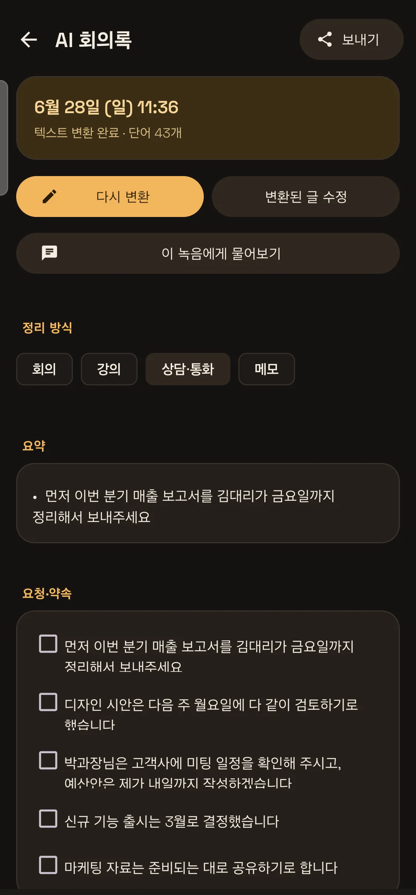
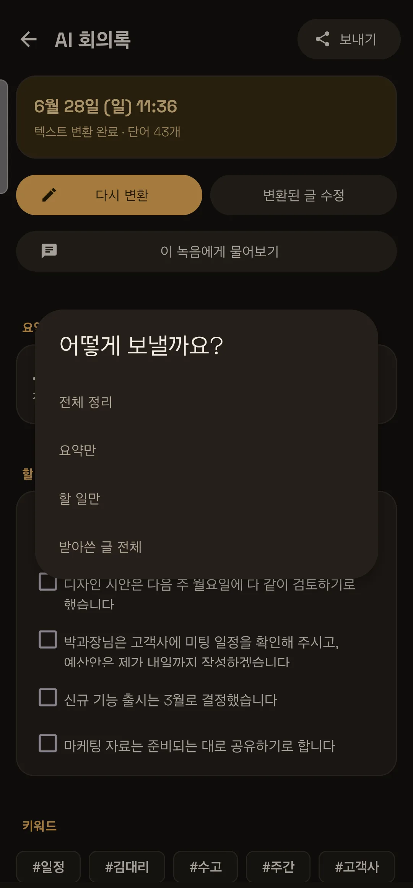
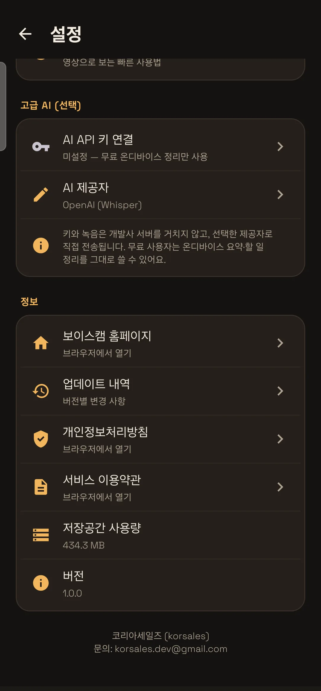

앱 한눈에 보기
보이스캠은 딱 세 개의 탭으로 이뤄져 있어 헷갈릴 일이 없어요. 아래만 알면 80%는 끝납니다.

화면을 이루는 세 개의 탭
- 녹음 — 큰 버튼 하나로 바로 녹음을 시작·정지해요. 최근 녹음도 여기서 바로 봅니다.
- 목록 — 지금까지의 모든 녹음을 폴더·즐겨찾기·검색으로 정리해 봅니다.
- 백업 — 구글 드라이브·외장장치·통화 녹음 백업을 켜고 끕니다.
설치와 첫 설정 (설정 마법사)
앱을 처음 켜면 설정 마법사가 1분 만에 나에게 맞는 사용법을 잡아줍니다.

세 가지 중에서 고르기
- 간편하게 — 켜두면 24시간 알아서 녹음하고 백업해요. 복잡한 설정 없이.
- 표준 — 직접 녹음하고, 수면·회의 등으로 자동 분류해요.
- 전체 기능 — 모드·메모·바로가기까지 모든 기능을 사용해요.
고른 내용은 나중에 설정에서 언제든 바꿀 수 있어요. 잘 모르겠으면 표준으로 시작하세요.
권한 안내 — 왜 필요한가요?
보이스캠은 꼭 필요한 권한만 요청하고, 무엇에 쓰는지 솔직하게 알려드립니다.
- 마이크 — 녹음에 반드시 필요해요 (필수).
- 알림 — 녹음 중이라는 상태를 알림으로 보여줘요. 끄면 녹음이 멈출 수 있어 권장합니다.
- 백그라운드 실행(배터리 최적화 제외) — 화면을 꺼도 녹음이 끊기지 않게 해줘요.
녹음 시작하기
상황에 따라 ‘한 번 녹음’과 ‘하루종일’ 중에서 고르면 됩니다.

한 번 녹음 vs 하루종일
- 녹음 탭 아래 토글에서 한 번 녹음 또는 하루종일을 고릅니다.
- 가운데 둥근 버튼을 눌러 시작해요. 소리는 실시간 파형으로 눈에 보입니다.
- ‘하루종일’은 한 번 켜두면 24시간 내내 이어 녹음하고, 길어진 녹음은 30분마다 자동으로 나눠 저장해요.
- 다시 버튼을 누르면 정지하고, 녹음이 목록에 저장됩니다.
녹음 중에 쓰는 기능
녹음하는 동안에도 중요한 순간을 놓치지 않게 도와줍니다.
- 일시정지·재개 — 잠깐 멈췄다 이어서 같은 파일에 녹음해요.
- 북마크 — 중요한 순간에 표시를 남겨, 나중에 그 지점부터 바로 들을 수 있어요.
- 백그라운드 유지 — 화면을 끄거나 다른 앱을 써도 녹음은 계속됩니다.
- 실시간 파형 — 소리가 잘 들어오는지 눈으로 확인해요.
1초 만에 시작하는 빠른 녹음
앱을 열 새도 없는 순간을 위해, 여러 빠른 진입점을 마련했어요.
- 홈 위젯 — 홈 화면 위젯을 눌러 바로 녹음을 시작해요.
- 빠른 설정 타일 — 알림창을 내려 ‘녹음’ 타일 한 번으로 시작.
- 앱 바로가기 — 앱 아이콘을 길게 누르면 수면·중요·일상 녹음을 바로 시작할 수 있어요.
- 재부팅 후 자동 녹음 — 휴대폰을 다시 켜도 자동으로 이어서 녹음(설정에서 켜기).
알아서 폴더 정리 — 자동 분류 모드
녹음을 일상·수면·중요·회의로 자동 분류해, 나중에 찾기 쉽게 정리해 둡니다.

모드는 이렇게 정해져요
- 자동으로 두면 시간대 규칙으로 분류해요. 예를 들어 설정한 수면 시간대의 녹음은 자동으로 ‘수면’으로.
- 녹음 전에 직접 일상·수면·중요·회의 모드를 골라도 됩니다.
- 모드별로 특화된 정리·분석이 따라와요. (수면 → 코골이 분석, 회의 → 핵심 정리 등)
AI 회의록 — 녹음을 글로 바꾸기
보이스캠의 대표 기능. 말을 글로 바꾸고, 핵심 요약과 할 일까지 자동으로 정리해 줍니다.

텍스트 변환 만드는 법
- 녹음을 연 뒤 재생 화면에서 회의록 버튼을 누릅니다.
- AI 텍스트 변환을 누르면 말이 글로 바뀌어요.
- 변환된 글 아래로 요약 · 할 일 · 키워드가 자동으로 정리됩니다.
요약·할 일 정리는 휴대폰 안에서 무료로 이뤄져요. 더 정확한 변환을 원하면 ‘고급 AI’에서 내 AI 키를 연결할 수 있습니다(아래 24번 참고).
직접 입력으로도 정리돼요
AI 변환 없이, 이미 가진 글을 붙여넣어도 보이스캠이 자동으로 정리해 줍니다.
- 회의록 화면에서 직접 입력을 누릅니다.
- 회의록 초안이나 메모 등 어떤 글이든 붙여넣고 저장해요.
- 그 즉시 요약·할 일·키워드가 자동으로 만들어집니다.
요약·할 일·키워드 읽는 법
정리된 결과는 이렇게 활용하세요.
- 요약 — 긴 녹음의 핵심 문장만 모아 한눈에 흐름을 잡아줘요.
- 할 일 — “~하기로”, “~까지” 같은 약속·기한을 자동으로 골라 체크리스트로 만들어요. 항목을 체크하면 줄이 그어집니다.
- 키워드 — 자주 나온 주제어를 뽑아, 무슨 이야기였는지 빠르게 파악하게 해줘요.
정리 방식 고르기 — 내 상황에 맞게
같은 녹음도 상황에 따라 다르게 정리돼요. 칩 하나만 누르면 됩니다.

네 가지 정리 방식
- 회의 — 요약 · 할 일 · 키워드
- 강의 — 핵심 정리 · 과제 · 꼭 외울 것
- 상담·통화 — 요약 · 요청·약속 · 날짜·숫자
- 메모 — 핵심 정리 · 키워드
고른 방식은 녹음마다 따로 저장돼요. 강의 녹음은 ‘강의’로, 고객 통화는 ‘상담·통화’로 — 한 번만 정해두면 됩니다.
녹음과 대화하기 — 물어보면 답해줘요
“할 일이 뭐였지?” 처럼, 녹음 내용을 직접 물어볼 수 있어요.

이렇게 물어보세요
- 회의록 화면에서 이 녹음에게 물어보기를 누릅니다.
- 추천 질문(한 줄 요약 · 할 일 · 결정사항 · 날짜·숫자)을 누르거나, 직접 입력해요.
- 녹음 내용에서 답을 찾아 바로 보여줍니다.
키 없이도 무료 검색으로 핵심을 찾아줘요. 내 AI 키를 연결하면 더 똑똑한 대화가 가능합니다.
들을 시간을 아끼는 똑똑한 재생
긴 녹음도 빠르고 편하게 듣게 해주는 재생 도구들이에요.

- 배속 — 1.0×부터 빠르게, 시간을 절약해요.
- 무음 건너뛰기 — 조용한 부분을 자동으로 넘겨 핵심만 들어요.
- 구간 자르기 — 필요한 부분만 잘라 저장(원본은 그대로).
- 북마크 점프 — 표시해 둔 중요한 지점으로 한 번에 이동.
- ±10초 — 놓친 부분을 살짝 되돌려 다시 듣기.
긴 녹음도 듣고 싶은 곳만 쏙
한 시간짜리 녹음도 보이스캠이 알아서 나눠 정리해 줍니다.

- 구간 자동 나눔 — 말이 끊긴 곳마다 구간을 나눠, 원하는 부분으로 바로 이동해요.
- 중요한 부분 표시 — 소리가 도드라진 핵심 구간을 자동으로 집어줘요.
- 메모·검색 — 녹음에 메모를 달고, 나중에 검색 한 번으로 다시 찾습니다.
그날의 기록을 한곳에 — 타임라인
같은 종류의 녹음을 날짜로 묶어, 하루의 흐름을 한눈에 봅니다.

여러 번에 나눠 녹음했더라도, 모드별·날짜별로 모아 보면 그날 무슨 일이 있었는지 흐름이 잡혀요. 일기처럼, 업무 기록처럼 쌓입니다.
수면 분석 — 잠든 사이의 신호를 읽다
‘수면’ 모드로 녹음하면, 밤새 소리를 분석해 코골이와 무호흡 의심 구간을 찾아줍니다.

- 코골이 점수 — 밤새 코골이 정도를 점수로 보여줘요.
- 무호흡 의심 — 숨이 몰아쉬는 의심 구간을 짚어줘요.
- 밤새 타임라인 — 시간대별 소리 강도와 이벤트 마커.
- 바로 들어보기 — 의심되는 그 순간부터 바로 재생.
긴급 SOS — 위급할 때 대신 전화
녹음 중 위급한 큰 소리가 감지되면, 화면 가득 경보가 뜨고 지정 번호로 자동 전화합니다.

설정하는 법
- 설정 → 긴급 SOS에서 기능을 켭니다.
- 긴급 연락처와 감지 민감도(둔감·보통·민감)를 정합니다.
- 경보 테스트로 미리 화면을 확인해요(실제 전화는 걸리지 않아요).
위험이 감지되면 취소 카운트다운이 뜨고, 취소하지 않으면 자동으로 발신합니다. 혼자 자는 밤에도, 야외에서도.
보내기 — 필요한 만큼만 골라서
정리한 회의록을, 통째로가 아니라 원하는 만큼만 골라 보낼 수 있어요.

이렇게 보내요
- 회의록 화면 위쪽 보내기를 누릅니다.
- 전체 정리 · 요약만 · 할 일만 · 받아쓴 글 전체 중에서 고릅니다.
- 메일·메신저·메모 등 원하는 앱으로 바로 보냅니다.
받는 사람만 열게 — 암호 압축 공유
민감한 녹음 파일은 비밀번호를 걸어 안전하게 공유하세요.

- 녹음을 공유할 때 암호 걸어 압축 공유를 고릅니다.
- 비밀번호를 정하면, 받는 사람은 그 비밀번호를 입력해야 열 수 있어요.
- 여러 개를 한 번에 골라 압축할 수도 있어요.
구글 드라이브 백업 — 내 계정에만
녹음을 잃어버리지 않게, 내 구글 드라이브에 자동으로 백업합니다.

- 백업 탭에서 구글 계정을 한 번 연결합니다.
- 자동 업로드를 켜면 녹음이 끝날 때마다 드라이브로 올라가요.
- Wi-Fi에서만 업로드, 업로드 후 폰에서 정리 같은 옵션도 고를 수 있어요.
녹음은 개발사 서버를 거치지 않고, 오직 본인 계정으로만 올라갑니다.
USB 외장장치 백업
클라우드 대신, USB 메모리나 외장 SSD에 직접 보관할 수도 있어요.
- 백업 탭에서 외장장치 백업을 켭니다.
- 저장할 외장 폴더를 한 번 지정해요.
- 이후 녹음을 그 장치로 안전하게 보관합니다.
통화 녹음 자동 백업
휴대폰에 쌓이는 통화 녹음, 기기를 잃어버리면 그대로 사라집니다. 자동으로 지켜드릴게요.
- 백업 탭에서 통화 녹음 폴더를 직접 선택합니다.
- 새 통화가 생길 때마다 자동으로 내 드라이브에 백업돼요.
- 기존 통화 전체도 한 번에 백업할 수 있어요.
설정 완전 정복
보이스캠의 설정은 ‘켜면 무엇이 바뀌는지’를 항상 한 줄로 알려줘요. 헷갈릴 일이 없습니다.

- 녹음 — 기본 모드, 음질, 화면 켜둠, 진동, 재부팅 자동 녹음, 수면 시간대.
- 긴급 SOS — 사용 여부, 연락처, 민감도, 경보 테스트.
- 화면 — 밝게/어둡게 테마, 앱 언어.
- 도움말·정보 — 설정 마법사, 사용법, 홈페이지, 업데이트 소식.
고급 AI — 내 AI 키 연결 (선택)
더 정확한 텍스트 변환과 더 똑똑한 대화를 원한다면, 내 AI 키를 연결할 수 있어요. 안 해도 핵심 기능은 모두 무료입니다.

이게 뭔가요?
OpenAI나 구글 Gemini 같은 AI 서비스에서 발급받은 나만의 키를 입력하는 기능이에요. 이 키를 연결하면, 더 높은 품질로 말을 글로 바꾸고 더 자연스러운 대화가 가능해집니다.
안심하세요
- 키는 이 휴대폰에만 저장돼요.
- 녹음과 키는 개발사 서버를 거치지 않고, 내가 고른 AI 서비스로 바로 전달됩니다.
- 연결하지 않아도 요약·할 일·키워드·정리 방식·무료 검색은 그대로 휴대폰 안에서 무료로 사용해요.
7개 언어 · 밝게/어둡게 테마
한국어를 비롯해 7개 언어를 완전 지원하고, 눈이 편한 테마를 고를 수 있어요.
- 언어 — 한국어 · 영어 · 스페인어 · 중국어(간체) · 일본어 · 프랑스어 · 독일어.
- 테마 — 밝게/어둡게, 또는 시스템 설정을 따라가기.
이렇게 쓰면 좋아요 — 활용 시나리오
직업과 일상에 따라, 보이스캠은 이렇게 빛납니다.
직장인 · 회의
회의를 녹음해 자동 회의록으로. 할 일만 골라 팀에 바로 공유하세요.
학생 · 강의
강의를 녹음하고 ‘강의’ 방식으로 정리. 핵심 정리와 ‘꼭 외울 것’으로 복습.
영업 · 상담
고객 통화를 ‘상담·통화’로 정리. 요청·약속과 날짜·숫자를 놓치지 마세요.
프리랜서
아이디어를 메모처럼 녹음하고, 핵심만 뽑아 노션·메일로 정리.
수면이 걱정될 때
밤새 녹음으로 코골이·무호흡을 체크하고, 병원 상담 자료로 활용.
혼자 있는 시간
긴급 SOS로 위급 상황에 대비. 위험 소리를 감지하면 자동으로 전화.
인터뷰 · 취재
대화를 글로 바꾸고, 핵심 발언을 빠르게 찾아 정리.
매일의 기록
하루를 녹음해 타임라인으로. 음성 일기처럼 쌓아 보세요.
자주 묻는 질문
인터넷이 없어도 쓸 수 있나요?
네. 녹음, 요약·할 일·키워드 정리, 무료 검색, 수면 분석은 모두 휴대폰 안에서 처리돼 인터넷이 없어도 됩니다. 클라우드 백업과 ‘내 AI 키’ 고급 기능만 인터넷이 필요해요.
구독료가 있나요?
없습니다. 한 번 구매하면 끝이에요. 매달 빠져나가는 구독료도, 광고도, 숨은 결제도 없습니다.
제 녹음이 회사 서버로 전송되나요?
아니요. 보이스캠은 개발사 서버를 두지 않습니다. 모든 분석은 휴대폰 안에서, 백업은 오직 본인 계정으로만. 데이터의 주인은 끝까지 본인입니다.
‘내 AI 키’를 꼭 연결해야 하나요?
전혀 아니에요. 연결하지 않아도 핵심 기능은 모두 무료로 쓸 수 있어요. 더 높은 변환 정확도가 필요할 때만 선택적으로 연결하면 됩니다.
화면을 꺼도 녹음이 계속되나요?
네. 백그라운드에서 계속 녹음됩니다. 다만 일부 휴대폰은 절전 기능이 강해, 배터리 최적화에서 보이스캠을 제외해 두는 걸 권장해요.
녹음 파일 이름이 바뀌나요?
실제 파일 이름은 그대로 유지돼 백업·정리가 안전해요. 보기 좋은 별명(표시 제목)만 따로 바꿀 수 있습니다.
수면 분석으로 병을 진단할 수 있나요?
아니요. 의료 진단이 아니라 조기 발견을 돕는 참고 자료예요. 의심 패턴이 보이면 전문의 상담을 권합니다.
어떤 언어를 지원하나요?
한국어·영어·스페인어·중국어(간체)·일본어·프랑스어·독일어, 7개 언어를 완전 지원합니다.
프라이버시 약속
보이스캠의 첫 번째 원칙은 프라이버시입니다.